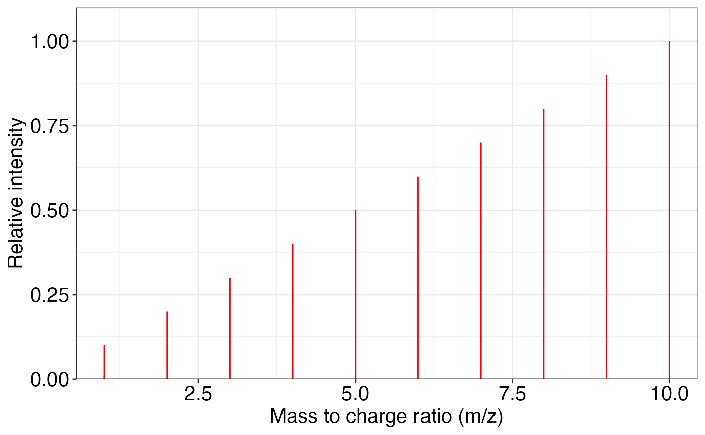
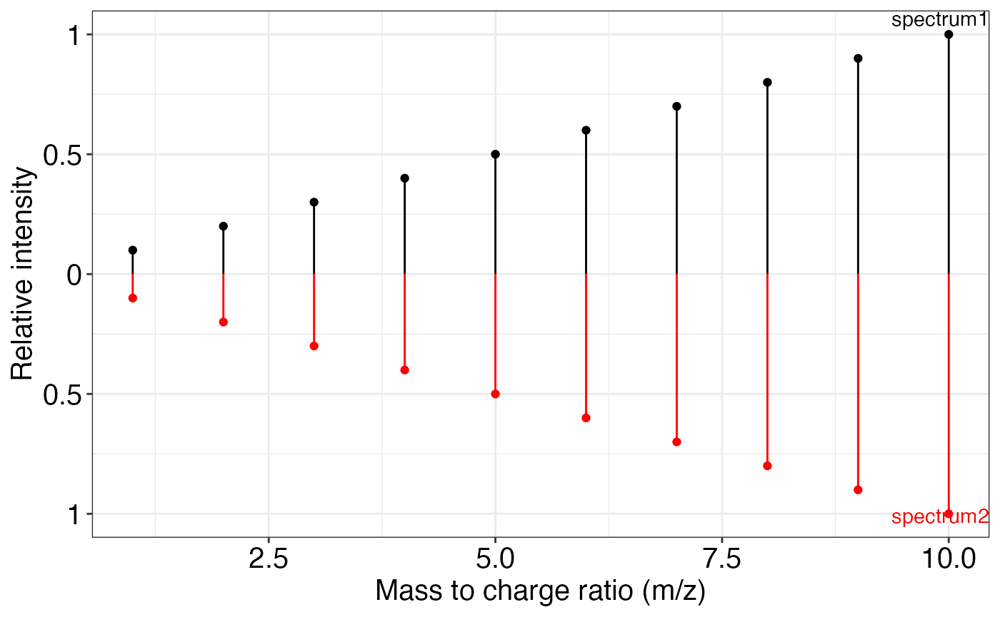
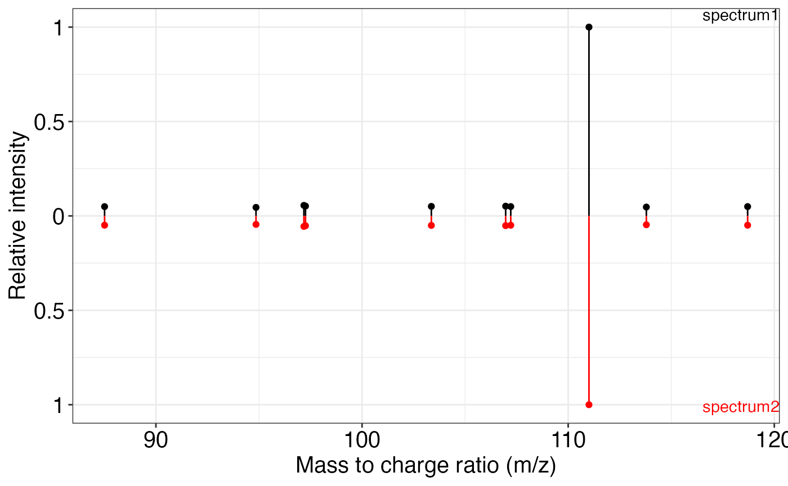
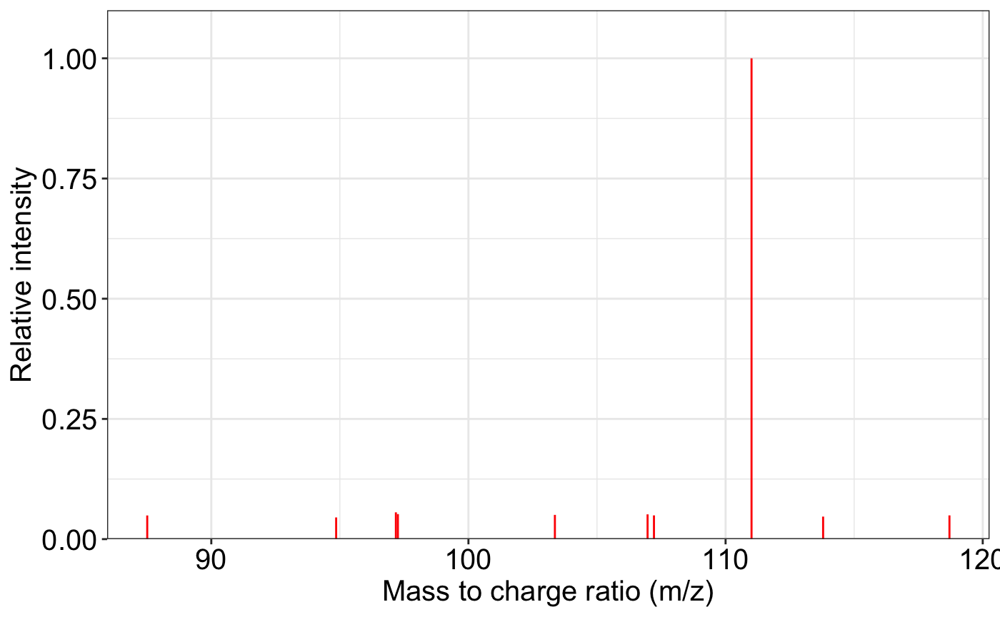

library(masstools)
#> ── Attaching packages ────────────────────────────────────── masstools 0.99.1 ──
#> ✓ magrittr 2.0.1
#> ── Conflicts ────────────────────────────────────────── masstools_conflicts() ──
#> x methods::body<-() masks base::body<-()
#> x methods::kronecker() masks base::kronecker()You can use masstools to do the chemical formula operation.
sum_formula(formula = "C9H11NO2", adduct = "M+H")
#> [1] "C9H12NO2"
sum_formula(formula = "C9H11NO2", adduct = "M+")
#> [1] "C9H11NO2"
sum_formula(formula = "C9H11NO2", adduct = "M+CH3COOH")
#> [1] "C11H15NO4"
sum_formula(formula = "C9H11", adduct = "M-H20")
#> [1] NA
split_formula(formula = "C9H11NO2")
#> element.name number
#> 2 C 9
#> 3 H 11
#> 4 N 1
#> 5 O 2
split_formula(formula = "C2H4")
#> element.name number
#> 2 C 2
#> 3 H 4
###remove the noisy peaks in one ms2 spectrum
exp.spectrum <- data.frame(mz = c(1:10, 1.0001),
intensity = c(1:10, 0.1))
ms2_plot(exp.spectrum)
exp.spectrum2 = removeNoise(exp.spectrum)
ms2_plot(exp.spectrum, exp.spectrum2)
###match two spectra according to mz
exp.spectrum <- data.frame(mz = 1:10, intensity = 1:10)
lib.spectrum <- data.frame(mz = 1:10, intensity = 1:10)
ms2Match(exp.spectrum, lib.spectrum)
#> Lib.index Exp.index Lib.mz Lib.intensity Exp.mz Exp.intensity
#> 1 1 1 1 1 1 1
#> 2 2 2 2 2 2 2
#> 3 3 3 3 3 3 3
#> 4 4 4 4 4 4 4
#> 5 5 5 5 5 5 5
#> 6 6 6 6 6 6 6
#> 7 7 7 7 7 7 7
#> 8 8 8 8 8 8 8
#> 9 9 9 9 9 9 9
#> 10 10 10 10 10 10 10
## calculate the dot product of two matched intensity
getDP(exp.int = 1:10, lib.int = 1:10)
#> [1] 1
getDP(exp.int = 10:1, lib.int = 1:10)
#> [1] 0.379698
###matched two spectra and calculate dot product
exp.spectrum <- data.frame(mz = 1:10, intensity = 1:10)
lib.spectrum <- data.frame(mz = 1:10, intensity = 1:10)
getSpectraMatchScore(exp.spectrum, lib.spectrum)
#> [1] 1MS2 plot and MS2 matching plot.
spectrum1 <- data.frame(
mz = c(
87.50874,
94.85532,
97.17808,
97.25629,
103.36186,
106.96647,
107.21461,
111.00887,
113.79269,
118.70564
),
intensity =
c(
8356.306,
7654.128,
9456.207,
8837.188,
8560.228,
8746.359,
8379.361,
169741.797,
7953.080,
8378.066
)
)
spectrum2 <- spectrum1
ms2_plot(spectrum1, spectrum2)
ms2_plot(spectrum1, spectrum2, interactive_plot = TRUE)
ms2_plot(spectrum1, interactive_plot = TRUE)We can match two feature tables according to mz and retention time.
data1 <- data.frame(mz = 1:10, rt = 1:10)
data2 <- data.frame(mz = 1:10, rt = 1:10)
mz_rt_match(data1, data2, mz.tol = 10)
#> Index1 Index2 mz1 mz2 mz error rt1 rt2 rt error
#> 1 1 1 1 1 0 1 1 0
#> 2 2 2 2 2 0 2 2 0
#> 3 3 3 3 3 0 3 3 0
#> 4 4 4 4 4 0 4 4 0
#> 5 5 5 5 5 0 5 5 0
#> 6 6 6 6 6 0 6 6 0
#> 7 7 7 7 7 0 7 7 0
#> 8 8 8 8 8 0 8 8 0
#> 9 9 9 9 9 0 9 9 0
#> 10 10 10 10 10 0 10 10 0Two web tools are used for compound compound convert.
cts.fiehnlab is http://cts.fiehnlab.ucdavis.edu/service/convert. It support a lot of databases.
We can use the trans_id_database() to get the databases that cts.fiehnlab.
database_name = trans_id_database(server = "cts.fiehnlab")
#> 226 databases are supported in server
#> http://cts.fiehnlab.ucdavis.edu/service/convert for 'from'.
#> 227 databases are supported in server
#> http://cts.fiehnlab.ucdavis.edu/service/convert for 'to'.
#>
head(database_name$From$From)
#> [1] "AAA Chemistry" "ABBLIS Chemicals" "Abbott Labs"
#> [4] "ABI Chem" "AbMole Bioscience" "Acesobio"
head(database_name$To$From)
#> [1] "AAA Chemistry" "ABBLIS Chemicals" "Abbott Labs"
#> [4] "ABI Chem" "AbMole Bioscience" "Acesobio"We can see that it support a lot of (> 200) databases.
We can try the most common convert, from KEGG to HMDB.
trans_ID(
query = "C00001",
from = "KEGG",
to = "Human Metabolome Database",
top = 1,
server = "cts.fiehnlab"
)
#> # A tibble: 1 × 2
#> KEGG `Human Metabolome Database`
#> <chr> <chr>
#> 1 C00001 HMDB0002111Now, trans_ID doesn’t support verctor query. So you can use the purrr::map() to achive this.
c("C00001", "C00001", "C00001") %>%
purrr::map(
.f = function(x) {
trans_ID(
query = x,
from = "KEGG",
to = "Human Metabolome Database",
top = 1,
server = "cts.fiehnlab"
)
}
) %>%
do.call(rbind, .) %>%
as.data.frame()
#> KEGG Human Metabolome Database
#> 1 C00001 HMDB0002111
#> 2 C00001 HMDB0002111
#> 3 C00001 HMDB0002111This is from https://www.chemspider.com/InChI.asmx.
We can use the trans_id_database() to get the databases that chemspider
database_name2 = trans_id_database(server = "chemspider")
#> 9 are supported in server https://www.chemspider.com/InChI.asmx.
#>
database_name2$From
#> [1] "csid" "inchikey" "inchikey" "inchikey" "inchi" "inchi" "inchi"
#> [8] "inchi" "smiles"
database_name2$To
#> [1] "mol" "csid" "inchi" "mol" "csid" "inchikey" "mol"
#> [8] "smiles" "inchi"This is very useful if you want to get the inchikey, inchi or smiles for one compound. But this web only support “ChemSpider ID” (csid), so we need use cts.fiehnlab convert to csid first.
trans_ID(
query = "C00001",
from = "KEGG",
to = "ChemSpider",
top = 1,
server = "cts.fiehnlab"
)
#> # A tibble: 1 × 2
#> KEGG ChemSpider
#> <chr> <chr>
#> 1 C00001 140526
trans_ID(
query = "140526",
from = "csid",
to = "mol",
top = 1,
server = "chemspider"
)
#> [1] NARefer this publication: https://jcheminf.biomedcentral.com/articles/10.1186/s13321-016-0174-y
result =
get_compound_class(
inchikey = "QZDWODWEESGPLC-UHFFFAOYSA-N",
server = "http://classyfire.wishartlab.com/entities/",
sleep = 5
)
result
#> [1] NA
name_duplicated(c("a", "a", "b", "c", "a", "b", "c", "a"))
#> [1] "a_1" "a_2" "b_1" "c_1" "a_3" "b_2" "c_2" "a_4"
name_duplicated(c(rep(1, 5), 2))
#> [1] "1_1" "1_2" "1_3" "1_4" "1_5" "2"
name_duplicated(1:5)
#> [1] 1 2 3 4 5
####just open the current working directory
openwd()
###A new folder will be opened and pop upWindows
Copy the file path in File explorer in Windows.
Then type in R:
Then paste the file path and type Enter.
get_os()
#> [1] "osx"masstools
masstools_logo()
#> Thank you for using masstools!
#> Version 0.99.1 (2021-12-26)
#> More information: search 'tidymass masstools'
#> _ _ _______ _
#> | | (_) |__ __| | |
#> | |_ _ _ __ _ _| | ___ ___ | |___
#> | __| | '_ \| | | | |/ _ \ / _ \| / __|
#> | |_| | | | | |_| | | (_) | (_) | \__ \
#> \__|_|_| |_|\__, |_|\___/ \___/|_|___/
#> __/ |
#> |___/ masstools
masstools_conflicts()
#> ── Conflicts ────────────────────────────────────────── masstools_conflicts() ──
#> x methods::body<-() masks base::body<-()
#> x methods::kronecker() masks base::kronecker()masstools
masstools_packages()
#> [1] "dplyr" "magrittr" "tibble" "tidyr" "stringr"
#> [6] "rstudioapi" "ggplot2" "methods" "crayon" "cli"
#> [11] "purrr" "plotly" "pbapply" "clisymbols" "htmltools"
#> [16] "httr" "plyr" "readxl" "rvest" "xml2"
#> [21] "htmlwidgets" "leaflet" "stats" "utils" "masstools"
sessionInfo()
#> R Under development (unstable) (2022-01-11 r81473)
#> Platform: x86_64-apple-darwin17.0 (64-bit)
#> Running under: macOS Big Sur/Monterey 10.16
#>
#> Matrix products: default
#> BLAS: /Library/Frameworks/R.framework/Versions/4.2/Resources/lib/libRblas.0.dylib
#> LAPACK: /Library/Frameworks/R.framework/Versions/4.2/Resources/lib/libRlapack.dylib
#>
#> locale:
#> [1] en_US.UTF-8/en_US.UTF-8/en_US.UTF-8/C/en_US.UTF-8/en_US.UTF-8
#>
#> attached base packages:
#> [1] stats graphics grDevices utils datasets methods base
#>
#> other attached packages:
#> [1] magrittr_2.0.1 masstools_0.99.1
#>
#> loaded via a namespace (and not attached):
#> [1] Rcpp_1.0.7 tidyr_1.1.3 clisymbols_1.2.0 assertthat_0.2.1
#> [5] rprojroot_2.0.2 digest_0.6.27 utf8_1.2.2 R6_2.5.0
#> [9] cellranger_1.1.0 plyr_1.8.6 evaluate_0.14 httr_1.4.2
#> [13] ggplot2_3.3.5 highr_0.9 pillar_1.6.2 rlang_0.4.11
#> [17] lazyeval_0.2.2 curl_4.3.2 readxl_1.3.1 rstudioapi_0.13
#> [21] data.table_1.14.0 jquerylib_0.1.4 rmarkdown_2.11 pkgdown_2.0.1
#> [25] desc_1.3.0 labeling_0.4.2 stringr_1.4.0 selectr_0.4-2
#> [29] htmlwidgets_1.5.3 munsell_0.5.0 compiler_4.2.0 xfun_0.29
#> [33] pkgconfig_2.0.3 htmltools_0.5.2 tidyselect_1.1.1 tibble_3.1.3
#> [37] fansi_0.5.0 viridisLite_0.4.0 crayon_1.4.1 dplyr_1.0.7
#> [41] grid_4.2.0 jsonlite_1.7.2 gtable_0.3.0 lifecycle_1.0.0
#> [45] DBI_1.1.1 scales_1.1.1 cli_3.0.1 stringi_1.7.3
#> [49] cachem_1.0.5 pbapply_1.4-3 farver_2.1.0 fs_1.5.0
#> [53] leaflet_2.0.4.1 xml2_1.3.2 bslib_0.3.1 ellipsis_0.3.2
#> [57] generics_0.1.0 vctrs_0.3.8 tools_4.2.0 glue_1.4.2
#> [61] purrr_0.3.4 crosstalk_1.1.1 parallel_4.2.0 fastmap_1.1.0
#> [65] yaml_2.2.1 colorspace_2.0-2 rvest_1.0.1 memoise_2.0.0
#> [69] plotly_4.9.4.1 knitr_1.33 sass_0.4.0